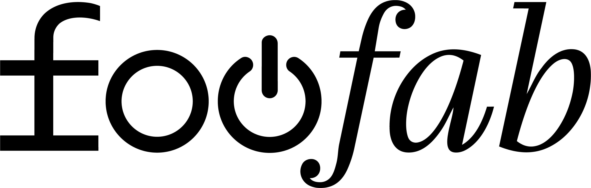

starte von einem basis-produkt. wähle form, geschmack, verpackung. lauf in 24 stunden durch den konfigurator, in tagen statt monaten am markt.
live-feed aus trending drops, community-briefs und kategorien, die gerade durchstarten. lass dich von uns inspirieren und entwickle dein eigenes ding.
finde marken und creator, die deine sprache sprechen. co-branded launches mit etablierten häusern — pulmoll, ronnefeldt und weiteren.